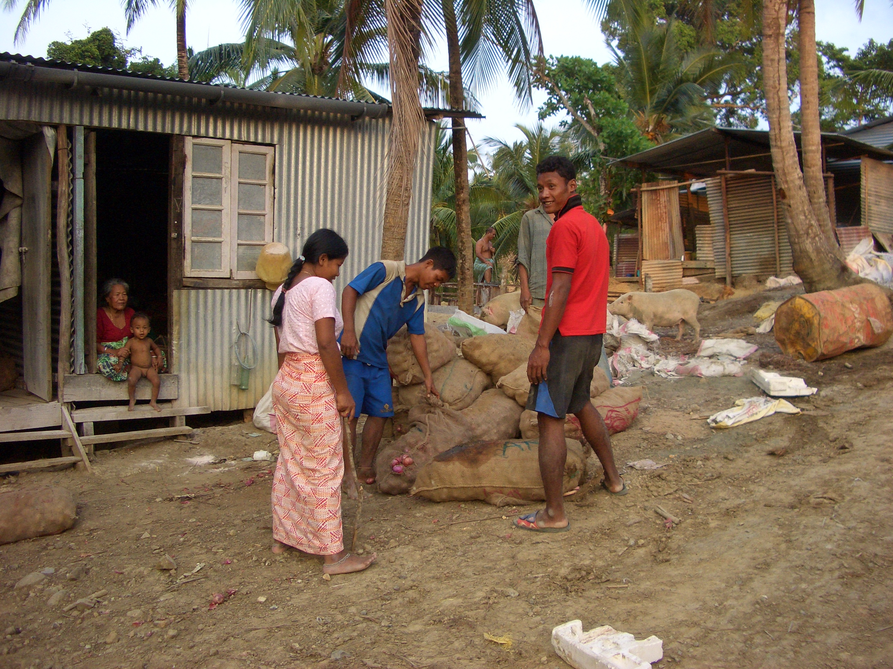

- Title Page
- Introduction
- The Islands and the Anthropologist
- Tsunami and First Response
- Wading In
- Second Tsunami
- In Search of Axes
- Steering a Sustainable Course
- Steering Committee
- Exchange Visit
- Nirnay Means Decision
- Up and Running
- Caritas Leans In
- Singh Sounds a Warning
- Midcourse Correction
- The SOPHIA Experiment
- Taking Stock
- SOPHIA Reports
SOPHIA Reports
In September 2007, SOPHIA filed its final report, and it was a bombshell.[78] Over the summer, communication between SOPHIA and the NYA had broken down completely. From its headquarters in Dehradun, SOPHIA had been unable to contact the Nicobarese CEO-designate, Ameen Ismail, either by telephone or by fax. No field reports had been filed. As far as SOPHIA could determine, no elections had been held, no FCRA permit secured, no bank account opened, no new projects ratified. Nothing.
In July, SOPHIA had identified a chartered accountant willing to work with the Nicobarese, but the NYA failed to send any of the documents needed to re-register as a voluntary organization and secure tax-exempt status. In fact, it was discovered that the NYA had not filed any tax returns or mandatory government reports for 10 years and was now subject to government penalties. As a consequence, SOPHIA recommended that NYA not seek to renew its registration but rather dissolve; perhaps a new nonprofit could be registered in its stead.
NYA had developed three preliminary project proposals during its collaboration with SOPHIA, but details were sketchy. After an initial outlay of about €625 in SIF funds, SOPHIA declined to release any more money for these projects or for further capacity building. At the end of the contract period, in September, SOPHIA declined even to send an evaluation team to the islands as there was “nothing to be evaluated.” “The objectives of the start-up project,” SOPHIA concluded drily, “have not been met.”[79]
In a separate report, Ramanujam related the many excuses for the breakdown in relations given by Ismail and his deputy: the phone and fax were broken; people had lost enthusiasm; team members lacked confidence to speak to elders and government officials; important documents may have been lost in the tsunami. But Ramanujam reported a bigger problem:
On his experience as CEO, Ameen said that he had come to realise that it was a tough job that required immense hard work, and that he had underestimated the extent of effort required. It was a new experience for him for hitherto he had been used to following instructions rather than working as the leader of a team.
As for the management team, “it appears that the team was unable to develop a professional outlook, and functioned, where they did, more as diffident students preparing for a test rather than as enterprising citizens working together for a loftier aim,” Ramanujam said.[80] He relayed Ismail’s assessment that NYA could not go forward without the help of an onsite “mentor” or “guide” to help with capacity building. Ramanujam himself was skeptical, remarking that the aid dependency and cultural malaise Singh had noticed a year earlier still held the Nicobarese in its grip. The people seemed unable to conceptualize their own future, he reported.

© Simron Singh
Villagers in temporary housing
Next? As the Steering Committee gathered around the conference table at the Institute of Social Ecology for the seventh time, on November 30, 2007, the committee members and guests were circumspect.[81] Altenburg was troubled by his financial responsibilities. SIF was fast coming up on its three-year anniversary, and while Caritas prided itself on its long-term engagements, the Nicobarese situation seemed hopeless. He had lost confidence in the NYA and preferred to make no more investment in that organization; he was also uncomfortable with the lack of professional oversight on the ground. But what was the alternative? There was about €300,000 still unspent in the fund. How could SIF get something accomplished?
Fischer-Kowalski was sympathetic and exasperated by turns. The Nicobarese were starting from scratch, she reminded everyone. Small steps were a start. Yet it seemed that the islanders might never be able to satisfy international accountability requirements. Singh, whose passion had launched the SIF endeavor, now seemed beyond caring. His strained relations with Rasheed had become an open rift, and he was distressed by recent incidents of profiteering and personal attacks against him in the islands. Though he believed that scientific research should continue in the Nicobars, he felt that his direct engagement should stop. “The motivation, the inspiration, and the action has to come from within the community,” he told a documentary film crew. “It’s their battle and they have to fight it.”[82]
Was this just a temporary setback, or had SIF foundered? Should it simply close down and return the money to donors? What exactly constituted locally engaged sustainable development and could it be achieved? Was an academic institution able to sponsor development projects? Had Singh behaved responsibly or rashly in coming to the assistance of the Nicobarese? What about the RECOVER research? If SIF failed, could the scientific research proceed? The SIF Steering Committee remained committed to self-determined, sustainable development in the Nicobars—but how?
[78] SOPHIA, “Final Report for ‘Start-Up Project,” September 2007.
[79] Rasheed was dismayed by SOPHIA’s assessment. Its expectations were unrealistic, he told the documentary film crew, and the Nicobarese were hurt by the insinuations of slacking. “A Nicobari cannot become a project officer within 10 days,” he protested. He felt SIF should rededicate its efforts.
[80] Venkat Ramanujam Ramani, “Independent Verification of SOPHIA’s Report on the Start-Up Project,” November 27, 2007.
[81] Information in this section taken from Minutes of the 7th SIF Steering Committee Meeting, November 30, 2007, in SIF files, and from interviews.
[82] Barth, Aftermath.